3_2_PyTorch配置#
作者: ZhouLong
创建日期: 2026 年 02 月 07 日
版本: 1.0
浏览量:
1 PyTorch的技术链路#
下图展示了从硬件层到应用层的英伟达 GPU 与 PyTorch AI 框架之间的完整技术栈结构。目前大多数的AI训练都是基于此技术链路。
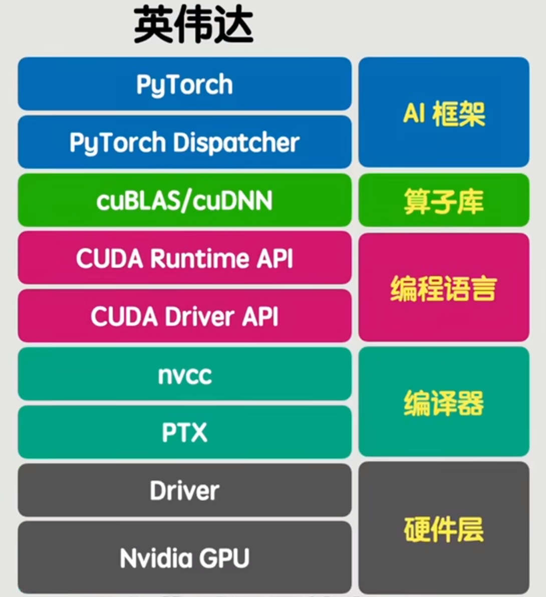
硬件层
Nvidia GPU：整个体系的物理基础，提供并行计算能力，支持深度学习训练与推理。
驱动层
Driver：包含 CUDA Driver API，负责操作系统与 GPU 之间的通信，管理 GPU 资源，如内存分配、上下文管理、内核启动等。
编译与中间表示层
nvcc：NVIDIA CUDA 编译器，将 CUDA C/C++ 代码编译为 GPU 可执行的代码。
PTX（Parallel Thread Execution）：一种中间汇编语言，实现跨 GPU 架构的兼容性，可在不同代 GPU 上运行。
运行时与编程接口层
CUDARuntimeAPI：提供更高层次的编程接口，简化 CUDA 程序开发，如内存管理、核函数调用等。
算子库与计算加速层
cuBLAS/cuDNN：NVIDIA 提供的 GPU 加速库，分别用于基础线性代数运算和深度神经网络计算，是深度学习训练的核心加速组件。
算子库：泛指各类针对特定计算任务优化的 GPU 算子集合，通常由 cuBLAS、cuDNN、cuFFT 等组成。
AI 框架调度层
PyTorchDispatcher：PyTorch 中的动态分发机制，根据输入张量类型、设备等自动选择最优的计算后端（如 CPU、CUDA、XLA 等）。
AI 框架层
PyTorch：最终和用户交互的API，也就是我们平时使用的工具，提供动态图机制、自动微分、模块化网络构建等功能，广泛应用于研究与生产。
2 安装方法#
安装分为cpu和gpu安装版本，一般简单测试可以只是用cpu，如果训练还是得采取gpu运算的版本。cpu版本安装较简单，gpu则稍微复杂，但是配置一次，就可以一直使用。
注意安装PyTorch前要配置好vscode和conda环境，可以参考 IDE和环境管理工具安装
在安装PyTorch之前，同时需要判断你的计算机是否安装了NVIDIA显卡，因为PyTorch的GPU版本需要NVIDIA显卡来加速计算。需要通过以下步骤来判断。
打开设备管理器：在Windows上，按下Win键和X键，然后选择“设备管理器”。在macOS上，打开“系统偏好设置”，选择“硬件”选项卡，然后点击“设备管理器”。
查看显示适配器：在设备管理器中，展开“显示适配器”或“图形处理器”部分，查看是否有NVIDIA显卡的列表。如果有NVIDIA显卡，那么你的计算机适合安装PyTorch的GPU版本。
下图代表无gpu
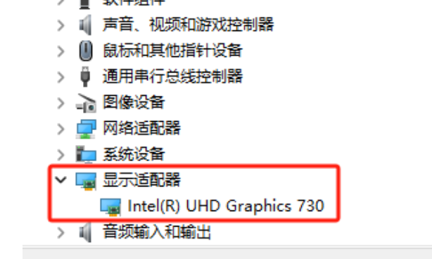
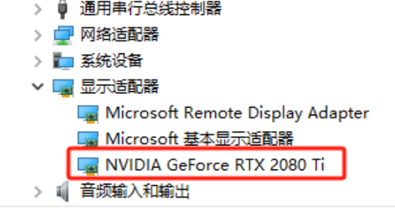
2.1 cpu版本#
首先创建虚拟环境并激活，envname是虚拟环境的名字，可以任意取，python版本可以任意选择，这里选择了3.11。
# 创建新环境
conda create -n envname python=3.11
# 激活环境
conda activate envname
接着使用pip进行安装
pip install torch torchvision
检测是否安装上了
pip show torch
如果出现了版本信息，则代表安装成功！
Name: torch
Version: 2.10.0
Summary: Tensors and Dynamic neural networks in Python with strong GPU acceleration
Home-page: https://pytorch.org
Author:
Author-email: PyTorch Team <packages@pytorch.org>
License: BSD-3-Clause
............
2.2 gpu版本#
gpu版本的安装较为复杂，我们需要额外先安装好技术链中的Cuda和CuDNN工具，再安装特定版本的gpu版本的PyTorch。
首先查看CUDA显卡驱动版本
在终端输入nvidia-smi，可以查看到版本为12.3。
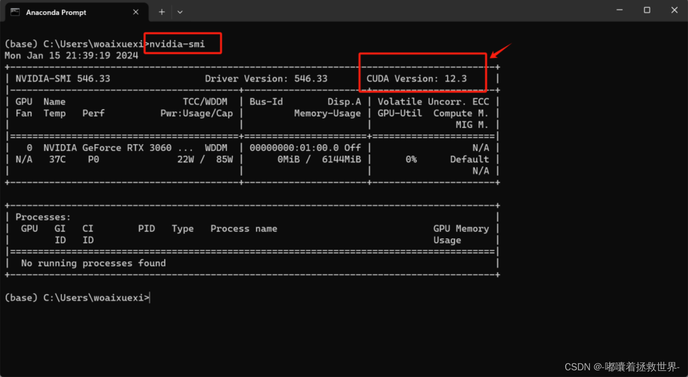
在官网下载cuda
从官网下载对应的CUDA版本，由于本机器的显卡版本为12.3，只需要安装小于或者等于12.3都是可以的，因此这里选择安装12.0。点击链接进入 官网
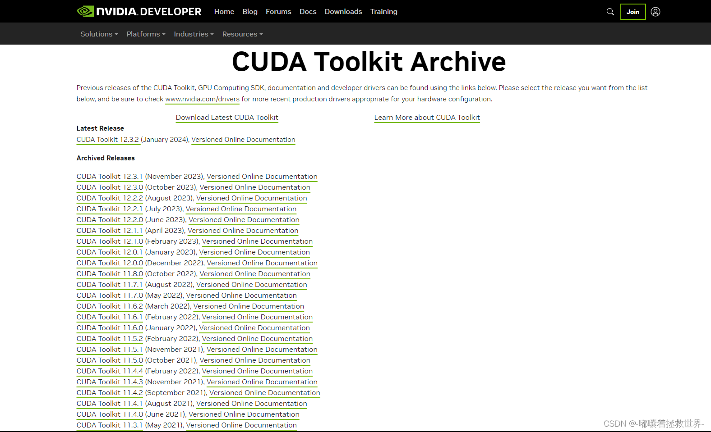
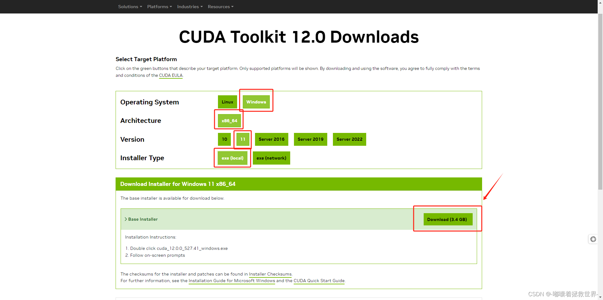
后续安装都选择默认即可安装。
设置环境变量
安装完CUDA后，我们需要设置一下环境变量：
右键点击【此电脑】→【属性】→【高级系统设置】→【环境变量】
在【系统变量】中找到Path，点击【编辑】
点击【新建】，添加以下路径：
C:\Program Files\NVIDIA GPU Computing Toolkit\CUDA
C:\Program Files\NVIDIA GPU Computing Toolkit\CUDA\v11.8\bin
C:\Program Files\NVIDIA GPU Computing Toolkit\CUDA\v11.8\libnvvp
C:\Program Files\NVIDIA GPU Computing Toolkit\CUDA\v11.8\x64
测试cuda安装是否成功
在终端输入nvcc -V，如果输出了版本信息则代表成功！
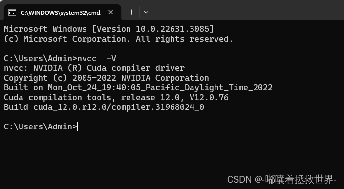
官网安装CuDNN
点击链接进入官网注意：需要注册登录才能进行安装！
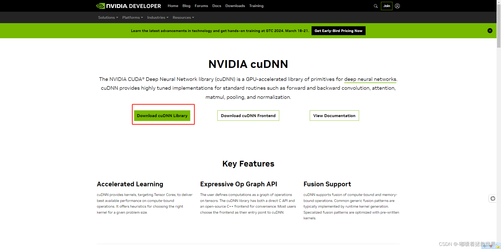
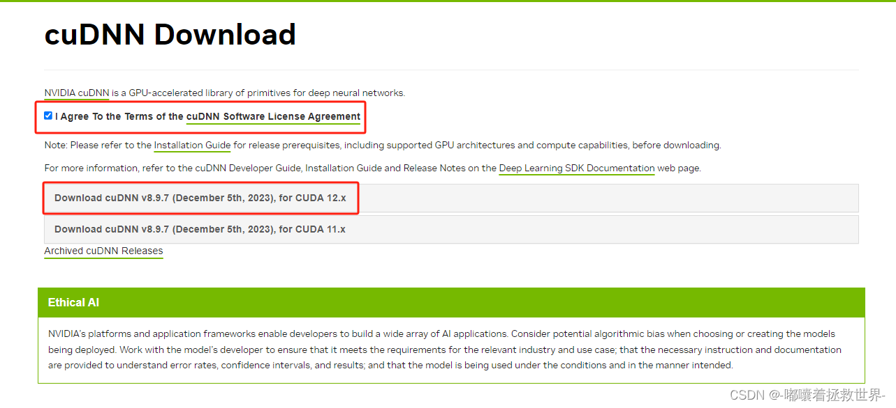
如复制到`.../NVIDIA GPU Computing Toolkit/CUDA/v11.6`下
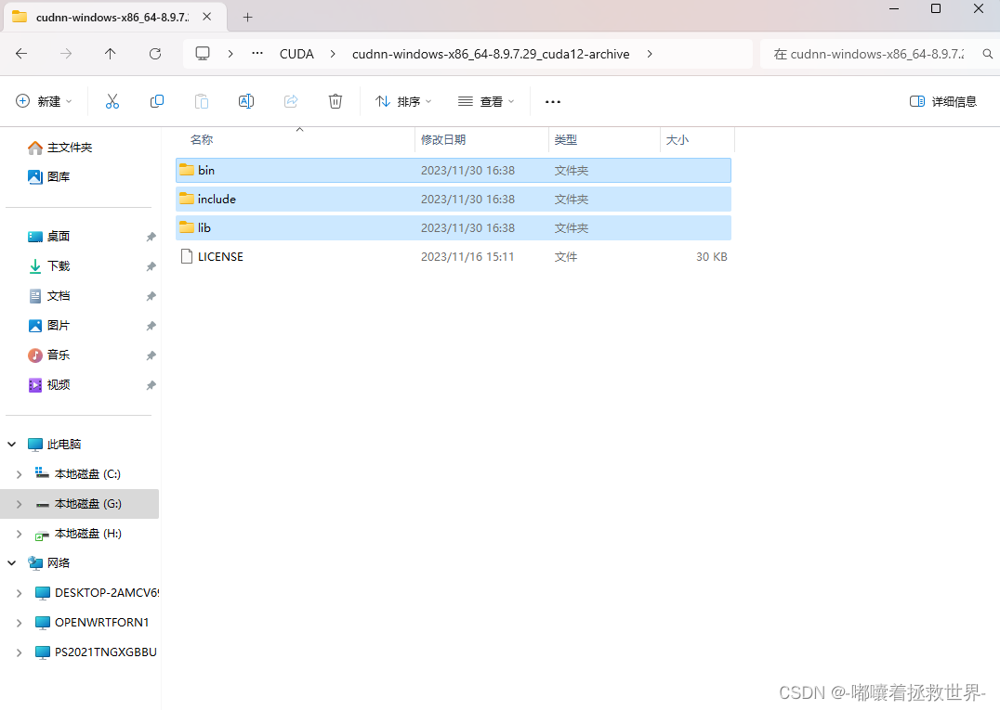
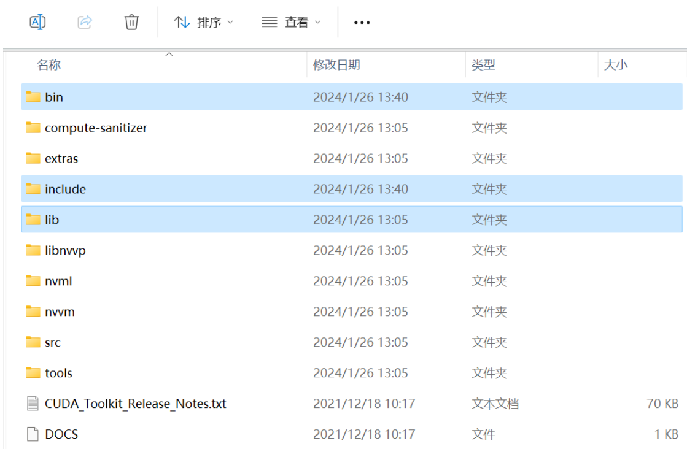
进入PyTorch官网
点击链接进入官网，选择合适的版本后，复制下载命令。
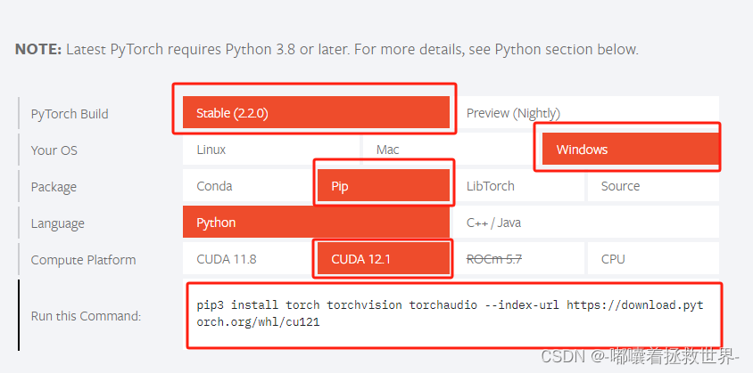
在虚拟环境中下载
首先创建虚拟环境并激活，envname是虚拟环境的名字，可以任意取，python版本可以任意选择，这里选择了3.11。
# 创建新环境
conda create -n envname python=3.11
# 激活环境
conda activate envname
接着使用pip进行安装（注意这里不要直接复制命令，要选择合适的版本来安装!）
pip3 install torch torchvision torchaudio --index-url https://download.pytorch.org/whl/cu121
检测是否安装上了
pip show torch
如果出现了版本信息，则代表安装成功！
引用